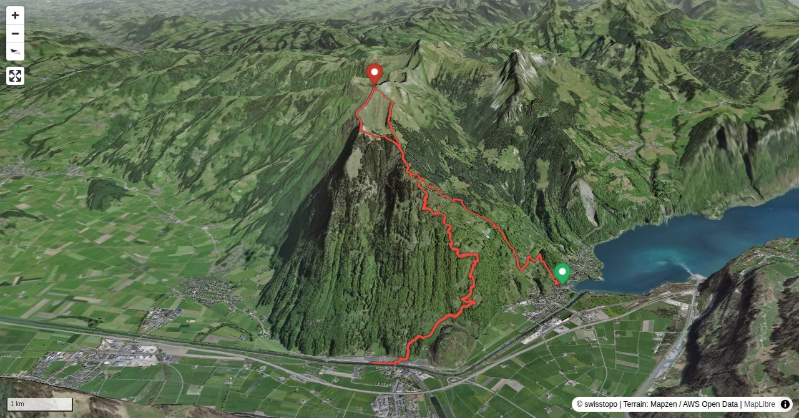

Schaut man vom Zürichsee ostwärts in die Berge, bleibt der Blick unweigerlich an der Federispitz-Krete hängen. Auf dieser Tour erlebt man für einmal die umgekehrte Sichtweise.
Die Krete beim Vorder Federispitz ist unübersichtlich und wellig, bei Nässe heikel. Einmal muss ein Grataufbau in der Schattenseite umgangen werden.
Quick Facts
| Summit elevation | 1864 m |
|---|---|
| Difficulty | SAC T4- Check the route notes below for terrain and commitment level. Guide |
| Trailhead | Ziegelbrücke |
| Region | Eastern Switzerland |
| Canton | St. Gallen |
| Distance | 14.1 km |
| Total ascent | 1490 m |
| Route sources | SAC Route Portal |
| Route author | Remo Kundert (via SAC Route Portal) |
Photos

Unternätenalp mit Federispitz gerade oberhalb der Alp und Plättlispitz rechts daneben
© Remo Kundert
Das Kreuz zu Beginn des Grates hinauf zum Vorder Federispitz.
© Remo Kundert
Abwechslungsreicher Gratverlauf mit schmaler Pfadspur
© Remo Kundert
Dieser Aufschwung wird rechts in der Schattenseite umgangen
© Remo Kundert
Blick zurück vom Vorder Federispitz
© Remo Kundert
Die letzten Aufstiegsmeter zum Federispitz
© Remo Kundert
Gipfelpanorama in Richtung Zürichsee
© Remo Kundert
Blick vom Gipfel gegen Speer (links) und Säntis (mitte, hinten)
© Remo Kundert
Die Kettenpassage im Abstieg vom Plättlispitz
© Remo Kundert
Weesen mit Plättlispitz (links) und Federispitz
© Remo KundertPhotos: Remo Kundert — via SAC Route Portal
Planning
i
i
sac_scale (precise T1–T6) with
swissTLM3D Wanderwegart
fallback where OSM is silent (coarser T2/T3 and T4+ buckets).
Coverage: OSM 59.8% · swisstopo 32.8% · unknown 6.2%.Elevations computed from the inlined GPX track (SwissTopo height API).
Loading forecast…
Start: Ziegelbrücke (425 m)
End: Weesen, See (423 m)
3D Terrain View

Route Details
Von Ziegelbrücke via Vorder Federispitz, Abstieg via Plättlispitz nach Weesen
- Ziegelbrücke - Unternätenalp, T3, 2 Std. 45 Min.
- Unternätenalp - Vorder Federispitz, T4-, 1 Std. 15 Min.
- Vorder Federispitz - Federispitz, T3, 30 Min.
- Federispitz - Plättlispitz - Unternätenalp T3, 1 Std.
- Unternätenalp - Weesen, T2, 1 Std. 45 Min.
Terrain & safety
Die Krete beim Vorder Federispitz ist unübersichtlich und wellig, bei Nässe heikel. Einmal muss ein Grataufbau in der Schattenseite umgangen werden.
Source: SAC Route Portal
Field Reference
| Trailhead | Ziegelbrücke | 47.13520, 9.09840 |
|---|---|---|
| Summit | Federispitz (1864 m) | 47.16659, 9.08961 |
| End | Weesen, See (423 m) | 47.13610, 9.05960 |
Coordinates are WGS84 decimal degrees (lat, lon). Emergency: 112 (general) or 1414 (Rega air rescue). Page URL: